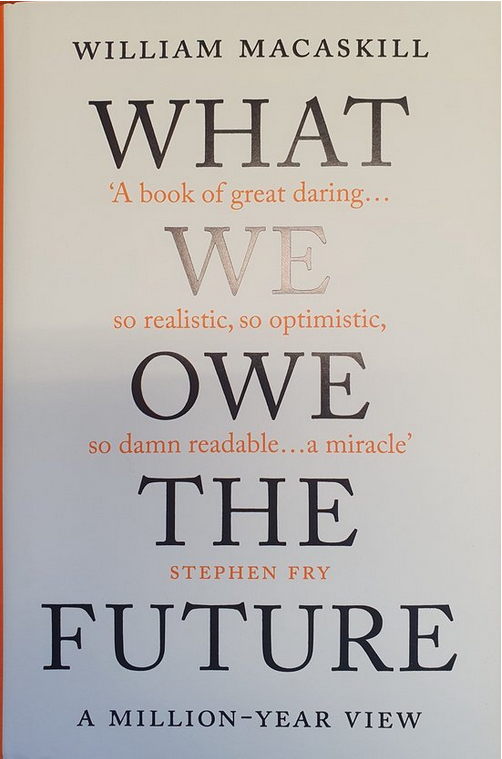

Een samenleving groeit groots als oude mensen bomen platen onder welke schaduwen ze nooit zullen zitten (p. 17)
Onlangs las ik een boek van William David MacAskill. Hij is een jonge, 35-jarige Schotse filosoof en ethicus die een boek heeft geschreven over de grote tijd die na ons komt. MacAskill houdt zich bezig met effectief altruïsme en is beïnvloed door mensen als Peter Singer en Derek Parfit. Hij wil dat onze menselijke waarden en moraliteit zich richten op de verre toekomst, veel verder dan we ons kunnen voorstellen. Het is nogal wat als je na wilt denken over de honderden miljoenen jaren die resten totdat er geen leven op aarde meer mogelijk is of de tientallen triljoenen jaren totdat het licht definitief uitgaat. Over die tijd schrijft hij. Bij dit soort tijdsperspectieven houdt in ieder geval mijn denken op, maar daar gaat het niet om hier. Het gaat MacAskill erom dat we ons verplaatsen in de schoenen van anderen die na ons komen en dat hun belangen onze belangen worden. Want wat we nu doen beïnvloedt het leven van velen die na ons komen en daarom moeten we nu wijs handelen. Dat kan een mooie toekomst zijn, een slechte toekomst of iets ertussenin. Dat is ongewis. Met ons handelen hebben we daarop wel invloed. Wij zijn maar een kleine minderheid ten opzichte van allen die nog komen en we hebben de plicht de wereld rechtvaardig en mooi achter te laten. MacAskill rekt niet alleen ons denken op, hij laat ook zien wat goed is om te doen.
De onderbouwing voor zijn pleidooi van langetermijndenken is simpel van aard: Mensen van de toekomst tellen mee, dat zijn er heel veel en wij kunnen hun leven beter maken. In de toekomst komen er nog tienduizend keer zo veel mensen als er tegenwoordig zijn (dat waren er volgens mij acht miljard ergens in november 2022). Met technologie en aanpassing van de moraal is het welzijn van mensen erop vooruitgegaan. Net zoals ons leven vorm heeft gekregen door hoe onze voorgangers in duizenden jaren ons leven hebben vormgegeven, zo vormen wij mede het leven van hen die na ons komen. Daarom is het zo belangrijk hier met elkaar goed over na te denken en te bepalen hoe we ons handelen effectief kunnen maken. Het raamwerk voor acties dat hij voorstaat omvat significantie (wat is de toegevoegde waarde), persistentie (hoe lang houdt het resultaat stand) en contingentie (wat zou het zonder die acties betekenen). Tegelijkertijd hangt de invloed van deze elementen weer samen met de tijd waarin we leven. Hij stelt dat we in een plastische en kneepbare tijd leven waarin het handelen veel invloed kan hebben. Het is daarom ook begrijpelijk dat MacAskill geïnteresseerd is in grote maatschappelijke veranderingen zoals de afschaffing van de slavernij. Een verandering die in gang gebracht is door een kleine groep Quakers en waar activisten, schrijvers, wetenschappers en politici aan hebben bijgedragen. Met z’n allen hebben zij ervoor gezorgd dat wij daar anders tegenaan zijn gaan kijken en ons anders zijn gaan gedragen. Tegelijk kan het ook zijn dat aangepaste waarden zich gaan vastzetten die bekrompen, parochiaal en niet-reflectief zijn en daar moeten we ons van bewust zijn. Door het boek heen presenteert MacAskill vier zeer verschillende maatschappelijke problemen die onze aandacht vragen: pandemieën en (natuurlijke en industriële) ziekteverwekkers, nucleaire oorlogen en biowapens, klimaatverandering en kunstmatige intelligentie. Die kunnen ervoor zorgen dat ons leven en onze civilisatie uitsterft, instort dan wel stagneert. Als je alleen daar al aan denkt kun je je niet voorstellen dat we nog zo lang te gaan hebben. Toch is MacAskill gematigd positief hierover als we de risico’s maar zo klein mogelijk houden en onze waarden aanpassen aan wat nodig is. Het is waard op te komen voor de belangen van de toekomst wanneer het leven goed genoeg is. Uit de verschillende soorten onderzoeken die er internationaal gedaan zijn, valt op te maken dat veruit de meeste mensen hun welzijn als positief ervaren. Sinds de Industriële Revolutie is er een opwaartse trend in dat welzijn vast te stellen en MacAskill verwacht dat dit ook zal gelden voor de komende honderd jaar. Dat geldt dan voor mensen. Over het welzijn van wilde dieren kunnen we zoiets niet zeggen, terwijl we over het welzijn van dieren op en rond boerderijen in de wereld echt niet positief kunnen zijn. Wel weer positief kunnen we zijn over zaken als democratie en wetenschappelijke vooruitgang(hoewel, vraag ik mij dan af, maar goed). Voor een slechte toekomst zouden we bevreesd moeten zijn, tegelijkertijd is hij optimistisch over een positieve ontwikkeling. Het laatste deel van zijn boek gaat over de acties en interventies die deze tijd vragen. Hij zegt daar zelf ook over dat deze met veel onzekerheid zijn omgeven. Van zaken als bijvoorbeeld kunstmatige intelligentie weten we niet goed hoe we de voordelen tegen de nadelen kunnen afwegen. Van bepaalde gevolgen zijn we ons nog niet eens bewust en van bepaalde oplossingen weten weer niet eens alle gevolgen. Over pandemieën en klimaatverandering weten we heel veel en over tegengaan van oorlogen en gevolgen van kunstmatige intelligentie weten we heel weinig. Dan zijn er ook weer verschillende manieren om problemen tegen te gaan, zoals het aanpassen van ons gedrag, doneren aan goede organisaties, acties ondernemen, ideeën verspreiden of kinderen krijgen. Effectief altruïsme heeft vooral zin als we blijven doen wat goed is om te doen en waarvan we weten dat het werkt, onze opties openhouden en blijven leren.
Nadenken over de toekomst kun je niet baseren op observaties en kan niet anders dan speculatief zijn. Weinigen durven zich hieraan te wagen. MacAskill wel. In dit boek doet hij uitspraken waarvan je denkt, waar is dat nu op gebaseerd en hoe komt hij nou hier weer aan. Wanneer je het boek leest, hoor je mensen hardop vragen: waar durft deze jongeman zich mee bezig te houden en is dit allemaal niet al te makkelijk gedacht? Voor mij zijn dat niet zulke belangrijke vragen. Met dit boek leer je voorbij jezelf en jouw kleine wereld te kijken en denken. MacAskill laat zien wat we samen kunnen doen en wat inspanningen van nu voor anderen later opleveren. Ik vermoed dat hij vooral jonge mensen enthousiast maakt om zich voor anderen in te zetten (‘Nou-als jij het niet doet, wie dan?’) en een maatschappelijke beweging op gang brengt die opkomt voor de belangen van de kinderen van de kleinkinderen en zij die nog geboren moeten worden. We zijn niet alleen verantwoordelijk voor ons erfgoed en eigen leven, maar ook voor wat na ons geboren wordt.

MacAskill, W. (2022). What we owe the future. New York, Basic Books. 448 pagina’s,